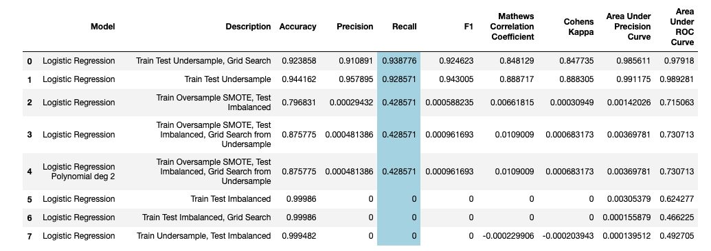
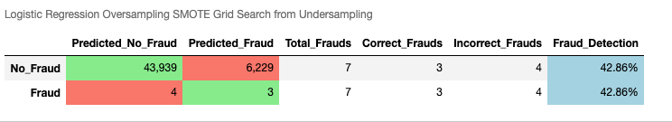
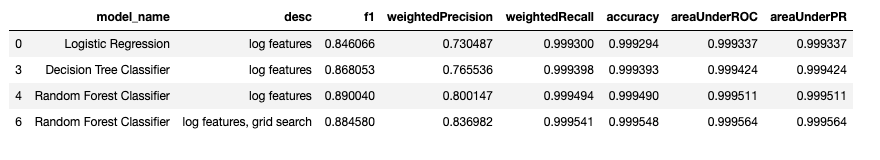

In this project I used the Kaggle Creditcard Fraud data to determine whether the transaction is fraud or not.
Assumptions:
Metric Used
Recall as the metric of evaluation. (Recall = TP / (TP + FN)).precision_recall_curve and after looking at the curve we should choose the value that we want for precision and recall.F_beta = (1+beta^2) PR/(beta^P + R) where P is precision and R is recall. (Mnemonic: Look at the denominator and remember that Recall is beta^2 time important than Precision). (Common values are 2 and 0.5. If beta is 2, recall is twice important than precision.)Resampling Techniques
SMOTE method. Used external library imblearn.| Model | Description | Accuracy | Precision | Recall | F1 | AUC | Untrue Frauds | Missed Frauds |
|---|---|---|---|---|---|---|---|---|
| keras | 1 layer, class_weight, early_stopping, scikit api | 0.987939 | 0.111989 | 0.867347 | 0.198366 | 0.927747 | 674 | 13 |
| cb_tuned pycaret | fold=5 | 0.9996 | 0.9659 | 0.7865 | 0.9667 | 0.8642 | ||
| catboost | seed=100,depth=6,iter=1k | 0.999631 | 1.000000 | 0.785714 | 0.880000 | 0.892857 | 0 | 21 |
Recall for all Classifiers with Grid Search for Undersampled Data
 
| Model | Description | Accuracy | Precision | Recall | F1(Weighted) |
|---|---|---|---|---|---|
| Isolation Forest | default | 0.997384 | 0.261682 | 0.285714 | 0.997442 |
| Local Outlier Factor | default | 0.996331 | 0.025641 | 0.030612 | 0.996493 |
| Model | Description | Accuracy | Precision | Recall | F1 | AUC |
|---|---|---|---|---|---|---|
| lightgbm | grid search optuna | 0.999315 | 0.873418 | 0.704082 | 0.779661 | 0.851953 |
| lightgbm | default | 0.997367 | 0.275862 | 0.326531 | 0.299065 | 0.662527 |
| Xgboost | default, imbalanced | 0.999263 | 0.850000 | 0.693878 | 0.764045 | 0.846833 |
| Xgboost | default, undersampling | 0.999263 | 0.850000 | 0.693878 | 0.764045 | 0.846833 |
| Xgboost | n_estimators=150, imbalanced | 0.999263 | 0.850000 | 0.693878 | 0.764045 | 0.846833 |
| Xgboost | undersample, hpo1 | 0.999298 | 0.881579 | 0.683673 | 0.770115 | 0.841758 |
| Xgboost | imbalanced, hpo | 0.999245 | 0.898551 | 0.632653 | 0.742515 | 0.816265 |
| xgboost | grid search optuna | 0.999333 | 0.875000 | 0.714286 | 0.786517 | 0.857055 |
| catboost | seed=100,depth=6,iter=1k | 0.999631 | 1.000000 | 0.785714 | 0.880000 | 0.892857 |
| Model | Description | Accuracy | AUC | Recall | Precision | F1 | Kappa |
|---|---|---|---|---|---|---|---|
| cb_tuned | fold=5 | 0.9996 | 0.9659 | 0.7865 | 0.9667 | 0.8642 | 0.8639 |
| lda_tuned | fold=5 | 0.9995 | 0.9833 | 0.7760 | 0.9217 | 0.8423 | 0.8420 |
| xgb | default | 0.9994 | 0.9585 | 0.7345 | 0.9102 | 0.8047 | 0.8044 |
| cb | default | 0.9995 | 0.9554 | 0.7345 | 0.9548 | 0.8215 | 0.8212 |
| lda | default | 0.9992 | 0.9677 | 0.7255 | 0.8340 | 0.7661 | 0.7657 |
| xgb_tuned | tuned | 0.9992 | 0.9677 | 0.7255 | 0.8340 | 0.7661 | 0.7657 |
| lda_tuned | n_iter=100,fold=10 | 0.9992 | 0.9677 | 0.7255 | 0.8340 | 0.7661 | 0.7657 |

| Model | Description | Accuracy | Precision | Recall | F1 | AUC | Missed Frauds | Untrue Frauds |
|---|---|---|---|---|---|---|---|---|
| keras | 3 layers, 2 dropouts, class_weight | 0.983744 | 0.081818 | 0.826531 | 0.148897 | 0.905273 | 17 | 909 |
| keras | 1 layer, dropout, early_stopping | 0.984990 | 0.090811 | 0.857143 | 0.164223 | 0.921177 | 14 | 841 |
| keras | 1 layer, dropout, steps_per_epoch, oversampling | 0.982796 | 0.080000 | 0.857143 | 0.146341 | 0.920077 | 14 | 966 |
| keras | 1 layer, class_weight, early_stopping, scikit api | 0.987939 | 0.111989 | 0.867347 | 0.198366 | 0.927747 | 13 | 674 |